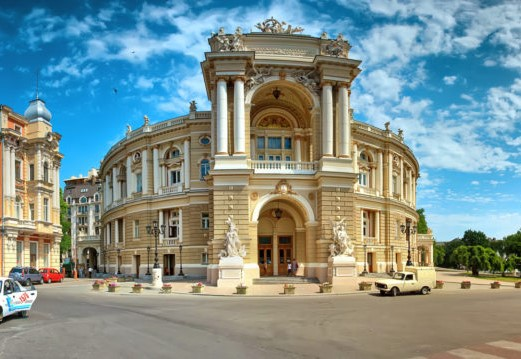

Володимир Миколайович Сосюра народився 6 січня 1898р. (за іншими даними 5 грудня 1897) на станції Дебальцево (нині Донецької області)
Невдовзі після народження Володимира родина Сосюр переїжджає до селища Третя Рота (нині — Верхнє, що входить до м. Лисичанська на Луганщині), де й минають дитячі роки поета.
У пошуках постійного даху над головою родина зривається з місця на місце, аж по багатьох переїздах оселяється у старій хворостянці над берегом Дінця.
Тут в єдиній кімнатці туляться восьмеро дітей і батьки. Саме цей шахтарський край назавжди увійде в лірику Сосюри ясними зорями і тихим Дінцем, заводськими димами і тяжкою працею, першими захопленнями, якоюсь особливою прямотою оцінок і жагою буття.
В одинадцять років Сосюра йде працювати — до бондарного цеху содового заводу, потім телефоністом, чорноробом, не цурається випадкових заробітків. Початкову освіту здобуває під наглядом батька, 1911 р. вступає до міністерського двокласного училища в с. Третя Рота.
1914 р. Володимир Сосюра вступає до трикласного нижчого сільськогосподарського училища на станції Яма Північно-Донецької залізниці (нині Сіверськ )
Не раз він дивився смерті у вічі: після денікінського розстрілу побував Сосюра і перед червоним ревтрибом, і тільки розважливість голови трибуналу, котрий розгледів у хлопчині щирий літературний талант, врятували йому життя п. 1920 р. в Одесі Сосюра вступає до лав більшовицької партії. Продовжує писати.
У листопаді 1920 р. Володимир Сосюра направляється в Єлисаветград, де захворює на дизентерію і потрапляє аж до зими в лікарню.
Під час відпустки 1921 р. в Харкові Сосюра знайомиться з Б. Коряком, В. Блакитним та І. Куликом — тодішнім завідувачем агітпропу ЦК КП(б)У, який відкликає його з армії на посаду інспектора преси при агітпропі.
Від 1925 р. Сосюра повністю віддається літературній роботі, полишивши агітпроп, а потім і Харківський університет ім. Артема (де він опинився в дивній ситуації, коли вивчав українську літературу, а сусіди по парті за підручником Плевака — його власну творчість).
1937 р., він одержує змогу переїхати з родиною до нової столиці України — Києва.
В роки війни Володимир Сосюра був у Кисловодську. Він повертається до Києва, в складі письменницьких агітгруп виступає перед населенням.
З наближенням фронту до столиці України разом зі Спілкою письменників виїздить до Уфи.
1944 р. поет повертається до Києва, працює на відбудові Хрещатика, пише. “І стало тихо так навколо, мов не було іще ніколи такої тиші на землі”, — так увічнив Сосюра першу хвилину миру в поемі “Огненні дороги” (1947).